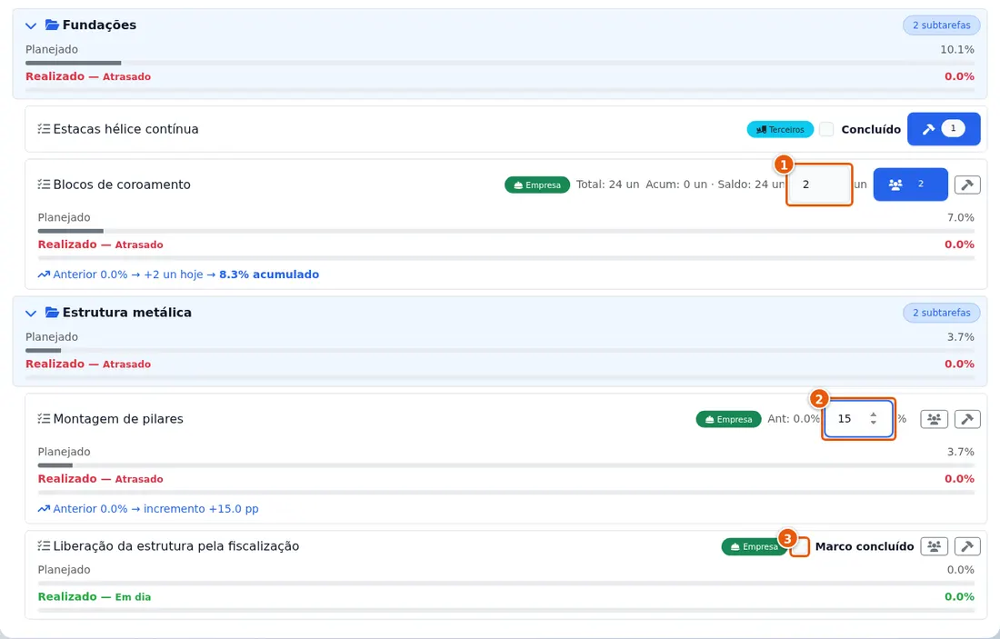

Folha 03/03Gestão de obra · diário e cronograma2026Cássio Viller
23 diários de obra estavam só no WhatsApp
No sistema, 28 atividades já concluídas apareciam como atrasadas. Quem olhava a tela via uma obra parada; quem estava no canteiro via o serviço andando.
42 diários até 11/08depois, nada no sistema23 dias recuperados
Antes · o que o cronograma mostrava
28 atividades prontas no canteiro, marcadas como atrasadas.
↓
Depois · com os diários recuperados
23 atividades com o avanço real lançado por diário, com data, foto e justificativa.

Tela real do diário de obra: o avanço é informado por quantidade, percentual ou marco concluído — e o cronograma se move.
O problema
Numa obra de galpões, o encarregado garantia que os diários estavam "devidamente atualizados" — e estavam, mas no grupo de WhatsApp. Sem diário no sistema, o cronograma não anda e a medição não fecha.
O que fiz
Li as mensagens e fotos do grupo, dia a dia, e montei uma carga de recuperação. Cada percentual ganhou uma justificativa escrita, apoiada no que a mensagem do dia dizia, num relatório que o gestor pode conferir.
Resultado
23 diários, 185 fotos e 72 registros de avanço em 23 atividades voltaram para o lugar certo. A lacuna, que espalhada nas mensagens não aparecia, ficou visível e recuperável.
Como a recuperação foi feita sem criar outro problema
Ensaio antes de gravar. A carga mostra tudo o que seria criado, sem gravar nada, para o gestor aprovar.
Nunca desfaz avanço já lançado. Se o sistema já tem um número maior, a carga se recusa a voltar atrás.
Virou ferramenta permanente. Importar de uma vez diários e fotos que ficaram de fora, sempre com ensaio.
E virou norma escrita do diário. Recuperar o passado corrige o número de hoje; só o acordo com quem preenche evita o próximo buraco.
23diários de obra recuperados
185fotos ligadas ao dia e à atividade
72registros de avanço, cada um com justificativa
28atividades prontas que o sistema mostrava como atrasadas
Sua obra anda no canteiro e não no relatório?
Eu sei onde a informação se perde.
Diário, cronograma, medição, compras e caixa — trabalhei em cada um e construí o sistema que liga todos. Vamos conversar sobre a sua obra.